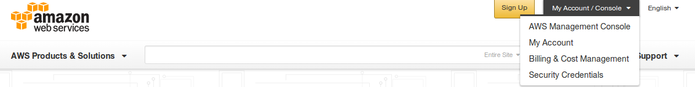
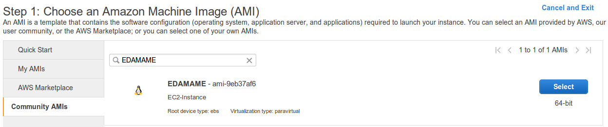
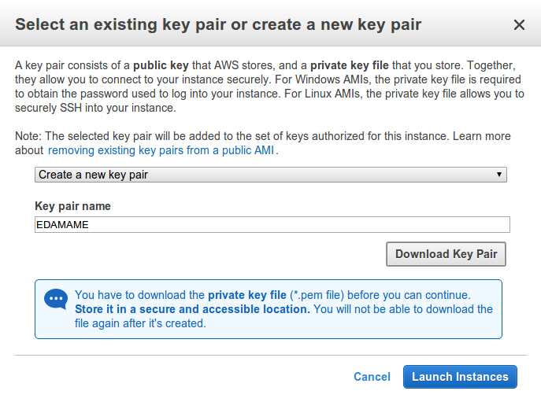

- Wednesday, August 13th, 2014
- How to set up an EC2 Instance
- More
- Thursday, August 14th, 2014
- Friday, August 15th, 2014
- Saturday, August 16th, 2014
- Sunday, August 17th, 2014
- Monday, August 18th, 2014
- Tuesday, August 19th, 2014
- Wednesday, August 20th, 2014
How to set up an EC2 Instance
Go to Amazon Web Services in a web browser.
* * *
Select ‘My Account/Console’ menu option ‘AWS Management Console.”

Log in with your username & password. If you are new to Amazon then select ‘I am a new user.’ and create an account (NOTE: You do need a credit card, but there is a free tier of usage).
* * *
Click on EC2 (towards the upper left of the page).

* * *
Click on the blue “Launch Instance” button (midway down the page)
* * *
Step 1:
Select “Community AMIs” and search for EDAMAME and Click the blue “Select” button on the right.
* * *

* * *
Step 2:
Select the appropriate instance type. This depends on the size of the data you are working with.
For the purpose of this workshop we will choose m3.large
Select Next: Configure Instance Details
* * *
Step 3:
At this step you can change specfic components of the instance.
For the purposes of this workshop we will not need to change any details.
Select Next: Add Storage
* * *
Step 4:
You can get up to 30 Gb of free storage on an EC2 Instance. If you have a particularly large data set, then you may want to request more data storage space.
For the purposes of this workshop, 30 Gb should be plenty of space for our data files.
Select Next: Tag Instance
* * *
Step 5:
As you become more adept at utilizing EC2 Instances, you may wish to create tags for them.
For the purposes of this workshop we will not need to create a tag of the instance.
Select Next: Configure Security Group
* * *
Step 6:
Here we will be making some changes.
- Name the Security Group Name to something you like.
>We chose the name EDAMAME for the purposes of this workshop.
-
If you would like to give a description of the Security Group, then please feel free to do so at this time.
-
Next we will be adding some rules to the security group.
-
Click on Add Rule and select HTTP.
-
Click on Add Rule and select HTTPS.
-
Click on Add Rule and select Custom TCP Rule.
>Change the Port Range to 8787. -
Click on Add Rule and select Custom TCP Rule.
>Change the Port Range to 8888 .
The Security Group Configuration should look like the image below once you add the above rules.
Click on the blue Review and Launch button!
If you would like to, take the time to double check that everything is setup the way you intended.
Once you are sure that the EC2 Instance is set up the way you would like it to be set up, then click on the blue Launch button.
* * *
Key Pair Pop-up
If you already have a key pair and you wish to use it, then select Choose an existing key pair, pick your desired key, select the acknowledgement (making sure you have access to .pem file) and then click on the blue Launch Instances button.
If you do not have an existing key pair or you do not want to use one you already have, then select Create a new key pair. Give the key pair a name; the below example’s key pair’s name is “EDAMAME”.
-
Click on Download Key Pair and save it to a known location.
-
Click on the blue Launch Instances button.

EC2 Dashboard - Instances
At this point you will be brought to your list of Instances on the EC2 Dashboard.
The instance you just launched will have a yellow pending circle next to it.
When the yellow cirle changes to a green circle, your instance is up and running.
In the example below, there are two instances currently running. When you select on by click on the box to the left of the instance, you will see the Instance details appear in the pane below your list of instances.
Locate the Public DNS for your instance. It should look something like this:
ec2-some set of numbers.compute‘41.amazonaws.com.
At some point you will need to highlight and copy the Public DNS.
This is the link to your specific instance that you started at Amazon Web Services (AWS).